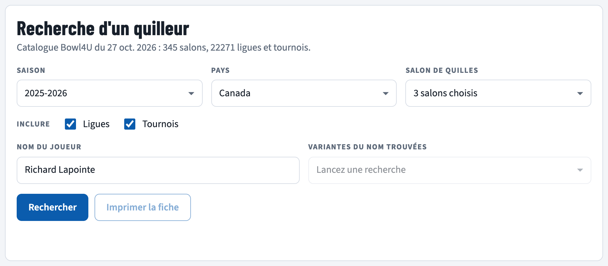
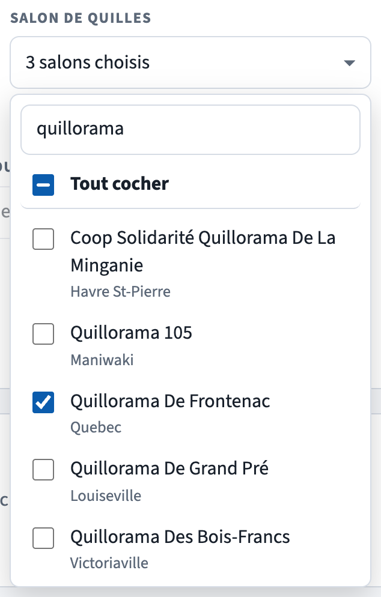
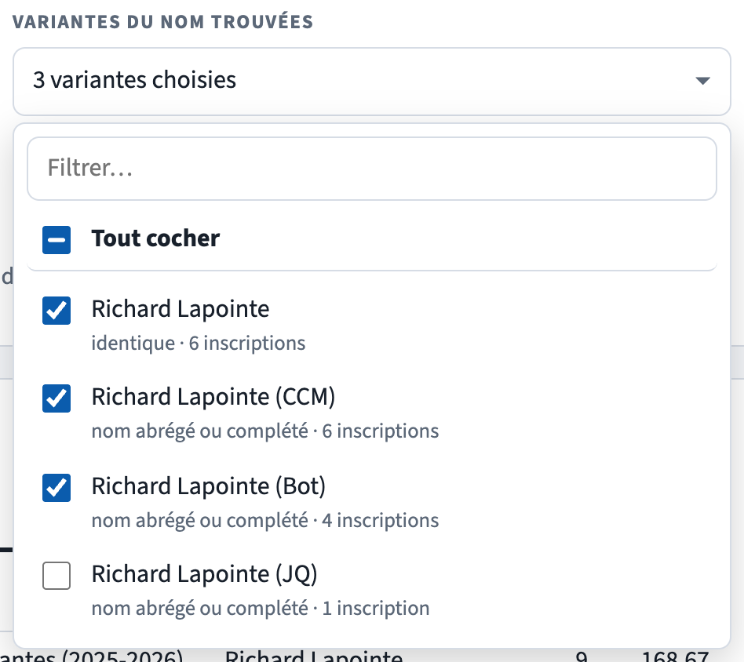
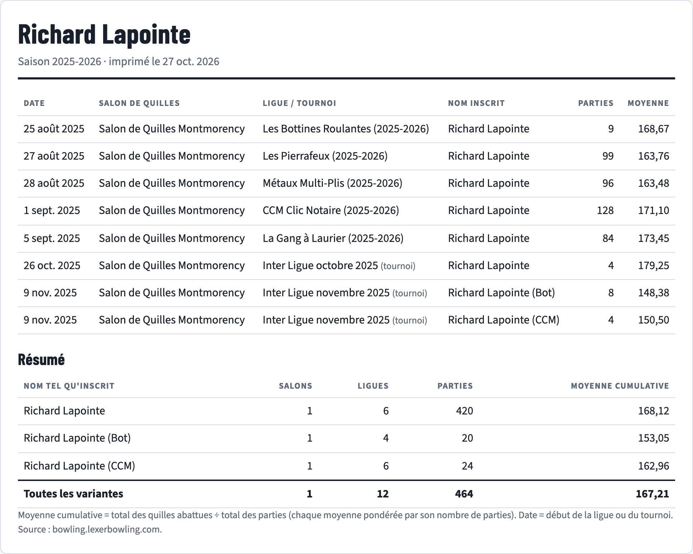
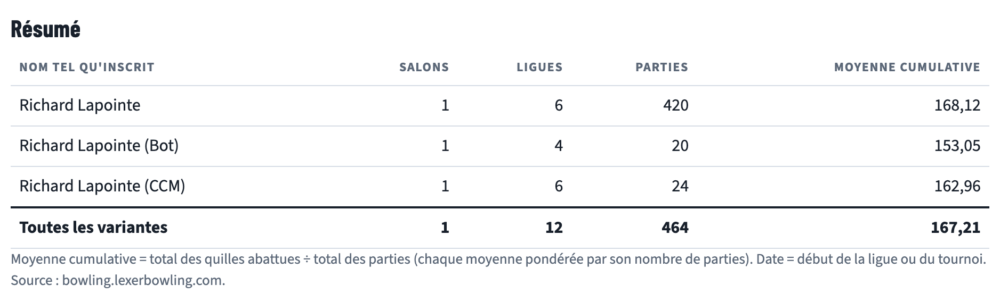
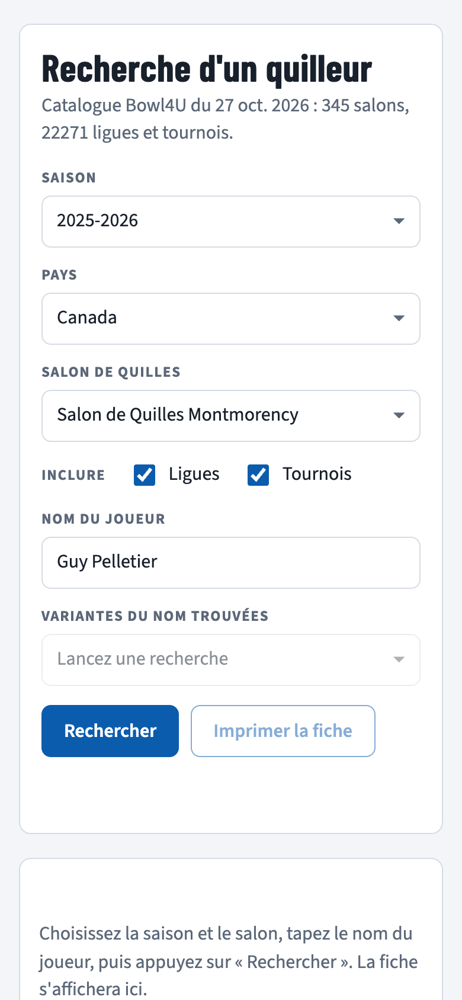
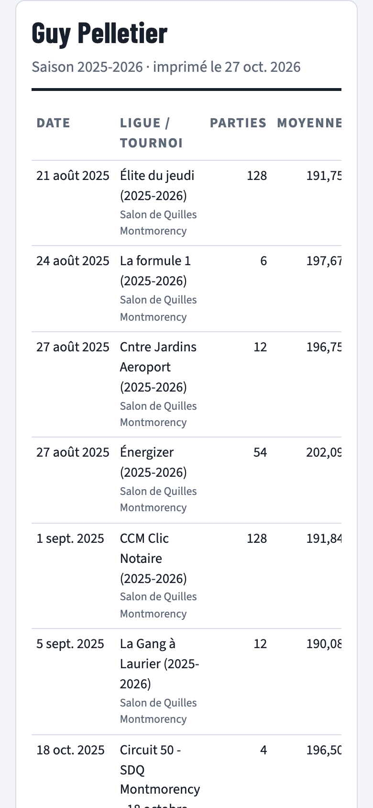

Cet outil retrouve un joueur de quilles dans toutes les ligues et tous les tournois publiés sur EZ Lexer, dans les salons et les saisons de votre choix. Il produit une fiche imprimable : chaque ligue où le joueur a joué, son nombre de parties, sa moyenne, puis un résumé pour chaque façon dont son nom est écrit.
https://jeanml250.github.io/recherche-joueur-lexer/Les salons qui utilisent le logiciel EZ Lexer publient leurs résultats sur Internet. La page
lexerbowling.com/gotobowl4u renvoie au site Bowl4U, qui en dresse la liste : 345 salons et plus de
22 000 ligues et tournois dans le monde.
Ouvrez cette adresse dans Safari, Chrome ou Edge :
https://jeanml250.github.io/recherche-joueur-lexer/Rien à installer. L'ordinateur de la maison n'a pas besoin d'être allumé. Il faut seulement Internet.
Dans le dossier Recherche Joueur Lexer, double-cliquez sur Lancer.command (Mac) ou
Lancer.bat (Windows). La page s'ouvre dans le navigateur. Une fenêtre noire reste ouverte : c'est le petit
serveur de l'outil. Elle affiche aussi une adresse du genre http://192.168.1.25:8790, utilisable par les
téléphones et tablettes branchés sur le même Wi-Fi. Fermez la fenêtre noire quand vous avez terminé.
nodejs.org). L'adresse en ligne, elle, ne demande rien.

Une barre de progression indique combien de ligues et de tournois ont été lus. Comptez environ une seconde par tranche de 25 ligues. Un salon sur une saison se fait en quelques secondes. Tous les salons du Canada sur plusieurs saisons peuvent prendre plusieurs minutes.
Le bouton Arrêter interrompt la lecture. La fiche montre alors ce qui a déjà été trouvé.
Vos derniers choix (saisons, pays, salons, nom) sont retenus sur l'appareil pour la prochaine fois.
Un même joueur n'est pas toujours inscrit de la même façon d'une ligue à l'autre. Après la recherche, la liste Variantes du nom trouvées montre chaque orthographe rencontrée, avec la raison du rapprochement et le nombre de ligues où elle apparaît.

| Type de variante | Exemple pour « Jean Tremblay » | Cochée d'office |
|---|---|---|
| identique | jean tremblay, Jean Trémblay (majuscules et accents ignorés) | oui |
| mots inversés | Tremblay Jean | oui |
| orthographe proche | Jean Tremblai, Jeanne Tremblay (une ou deux lettres de différence) | non |
| nom abrégé ou complété | J. Tremblay, Jean-Guy Tremblay, Jean Tremblay (Bot) | non |
La fiche se met à jour dès que vous cochez ou décochez une variante. Inutile de relancer la recherche.
Si le joueur n'apparaît pas du tout, essayez seulement son nom de famille, ou une autre orthographe.

| Colonne | Contenu |
|---|---|
| Date | Date du début de la ligue ou du tournoi. Les lignes sont classées par date. |
| Salon de quilles | Le salon où le joueur a été trouvé. |
| Ligue / tournoi | Le nom tel que publié sur Lexer. Les tournois portent la mention « (tournoi) ». |
| Nom inscrit | Affichée seulement quand plusieurs variantes sont cochées : l'orthographe utilisée dans cette ligue. |
| Parties | Nombre de parties jouées dans cette ligue ou ce tournoi. |
| Moyenne | Moyenne du joueur dans cette ligue ou ce tournoi, telle que publiée par Lexer. |
Les ligues où le joueur est inscrit mais n'a encore joué aucune partie ne sont pas listées.

| Colonne | Contenu |
|---|---|
| Nom tel qu'inscrit | Chaque variante cochée, séparément. |
| Salons | Nombre de salons différents où ce nom apparaît. |
| Ligues | Nombre de ligues et tournois différents. |
| Parties | Total des parties. |
| Moyenne cumulative | Total des quilles abattues divisé par le total des parties. |
| Toutes les variantes | Ligne de total, présente quand plus d'une variante est cochée. |
Appuyez sur Imprimer la fiche. Seule la fiche est imprimée : le formulaire disparaît et les couleurs passent en noir sur blanc, même si l'écran est en mode sombre.
La fiche porte la date d'impression, et la liste des saisons couvertes sous le titre.


Sur téléphone, les listes s'ouvrent directement dans la page. Touchez de nouveau le bouton de la liste pour la refermer. Si le tableau est plus large que l'écran, faites-le glisser de côté avec le doigt.
Une nouvelle ligue ou un nouveau tournoi n'apparaît dans l'outil qu'après la mise à jour du catalogue. Faites-la au début de chaque saison, puis de temps en temps pour ajouter les nouveaux tournois. Le message sous le titre du formulaire indique la date du catalogue en usage.
Recherche Joueur Lexer.Mettre à jour le catalogue.command.Mettre a jour le catalogue.bat ; il ne republie la page en ligne que si Git y est installé et relié au compte GitHub.Les moyennes, elles, n'ont pas besoin de mise à jour : elles sont lues en direct à chaque recherche.
| Situation | Que faire |
|---|---|
| « Aucun joueur de ce nom. » | Vérifiez la saison et le salon choisis. Essayez seulement le nom de famille, ou une autre orthographe. |
| Une ligue récente manque. | Mettez à jour le catalogue (section 7). |
| « … ligues lues, 3 illisibles » | Ces pages n'étaient pas disponibles sur Lexer au moment de la recherche (ligue retirée ou serveur occupé). Relancez la recherche plus tard. |
| Deux joueurs différents portent le même nom. | L'outil ne peut pas les distinguer. Limitez la recherche aux salons ou aux saisons du bon joueur, ou ignorez les lignes en trop. |
| La recherche est longue. | Cochez moins de salons ou de saisons. Une recherche refaite sans recharger la page relit seulement les nouvelles ligues. |
| Une date semble fausse. | La date vient de Bowl4U, telle que le salon l'a saisie dans Lexer. |
| Le bouton « Imprimer la fiche » est grisé. | Aucune variante n'est cochée, ou aucune recherche n'a encore été faite. |
| Fichier | Rôle |
|---|---|
index.html | La page de recherche (formulaire et fiche). |
catalogue.js | La liste des salons et des ligues, produite par la mise à jour. |
catalogue.mjs | Le programme de mise à jour du catalogue. |
serveur.mjs | Le petit serveur utilisé par Lancer.command / Lancer.bat. |
Lancer.command, Lancer.bat | Ouvrent l'outil sur l'ordinateur (Mac, Windows). |
Mettre à jour le catalogue… | Mettent à jour la liste des salons et des ligues. |
LISEZMOI.md | Aide-mémoire court. |
guide/ | Ce guide et ses captures. Pour le refaire : node guide/generer-guide.mjs. |
Le code est aussi sauvegardé sur GitHub : github.com/Jeanml250/recherche-joueur-lexer.